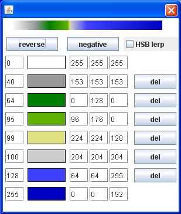
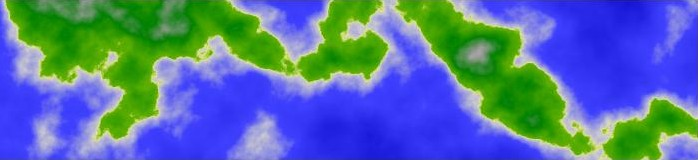
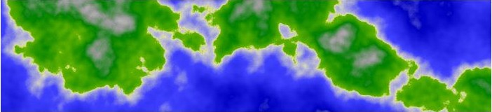
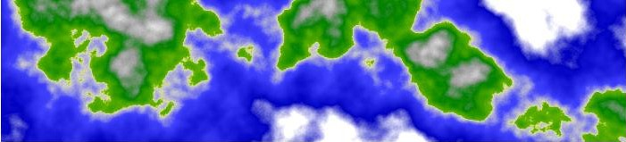

As with the classic Clouds image ("sum 1/f noise") we compute a weighted sum for a set of scaled noise calls. However, instead of using the resulting value to calculate individual color channel values, we use it to index into a ColorMap to get stored color channel data.
The following code will create a BufferedImage that
matches the above graphic. A template has been provided (see the
"Export Code" button) where you can save code that will generate a texture and
and run it as a stand-alone Java program. Code lines that are different
from previous examples are bolded.
int[][] pegs = { // location, R, B, G, alpha
{0, 255, 255, 255, 255},
{40, 153, 153, 153, 255},
{64, 0, 128, 0, 255},
{95, 96, 176, 0, 255},
{99, 224, 224, 128, 255},
{100, 204, 204, 204, 255},
{128, 64, 64, 255, 255},
{255, 0, 0, 192, 255}};
int[] colorMap = ColorMap.makeMap(pegs);
BufferedImage image = new BufferedImage(width, height,
BufferedImage.TYPE_INT_ARGB);
WritableRaster raster = image.getRaster();
int[] pixel = new int[4];
pixel[3] = 255; // alpha = opaque
int[] octaveScale = {1, 4, 16, 64};
int[] octaveAmplitude = {64, 16, 4, 1};
int octaves = octaveScale.length;
float amplitudeSum = 0;
for (int i : octaveAmplitude)
{
amplitudeSum += i;
}
double noiseSum = 0;
for (int y = 0; y < height; y++)
{
for (int x = 0; x < width; x++)
{
noiseSum = 0;
for (int i = 0; i < octaves; i++)
{
noiseSum += SimplexNoise.noise(
x * octaveScale[i]/256f,
y * octaveScale[i]/256f )
* ( octaveAmplitude[i]/amplitudeSum );
}
noiseSum = (noiseSum * 0.5) + .5;
noiseSum *= 256;
noiseSum = Math.max(noiseSum, 0);
noiseSum = Math.min(noiseSum, 255);
int idx = (int)noiseSum;
image.setRGB(colorMap[idx]);
}
}
In this example, we use the calculated noise value to index into a color map. The calculation of the noise value itself is pretty much identical to the method used in the previous section Classic Clouds - Sum 1/f noise. The scaling is a bit different, and I've also added a couple lines (min and max clamping) to the processing of the output to help out with examples at the end of this section where we directly edit this code.
Before we can index into a Color Map, we have to have one! It is possible to take any graphic source and use it as a map. Just load the graphic into a BufferedImage, and scale your noise value to index in and inspect the color data.
For the purposes of the tutorial, I have created a ColorMap class which allows us to procedurally create a structure that we can index into. I made the length of the ColorMap equal 256, so we can use the same scaling we used for our color values previously. The values used in this map can be seen in the following graphic, where we show the data as it is held in the Color Gradient editing tool that is located on the bottom right corner of the Texture Editing tool.
Fig. 1, Terra Color Map via the Color Gradient editing tool.
At the top of the diagram is a strip of continuously changing colors that shows the Color Map laid out from left to right. Below are a series of rows and columns that define and hold the peg values. From left to right, the text fields hold the following data: (1) pixel position, (2) a color swatch, (3) the Red value, (4) the Green value, (5) the Blue value. Lastly, there are DEL buttons delete the given color peg.
The pegs are fixed positions in the map that match the indicated RGB values. The gradients in between the pegs are created by linear interpolation the color values.
In both the previous examples (Tree Rings and Classic Clouds, the Texture Editor uses Color Maps in a way that matches the range of color values computed in the code examples. For the Clouds, the noise values are scaled to 0 to 255 and placed into the Red and Green color channels. With a color mapping function, the 0 to 255 indexes into the map to obtain the color data for all the color channels, and the values are the same since the map uses linear interpolation.
Likewise, with the Tree Rings, the noise values are given a scaling and translation to fit within a certain range of browns. With a color map, the two browns are set to be the first and last elements of the map, and a single scaling of the noise value to 0 to 255 is able to obtain all the color channels. Using a map can thus lead to an increase in efficiency when we would otherwise have to apply different scaling & translating for each color.
The Terra Surface texture is just a slightly more complicated version of this in that there are more colors involved, and on the fly calculation of the individual color channels would be even more costly.
The particular gradient used here is modeled on one shown
in a tutorial by Shannon Smith (aka AngryOctapus at
http://www.angryoctopus.co.nz/?p=11). He says got this
gradient from a selection of preset gradients included in Gimp. I've
done my best to match the colors by eye, but the matching could be
better, and I've left out the use of white at the far right of his
example due to being restricted to 8 pegs.
[Shannon goes on to turn the 2D planet surface gradient into a 3D planet graphic, so you might want to to check that out! I'm not planning to get into 3D in this introductory tutorial.]
You can get a closer look at the gradient used in our example by bringing it up in the Color Gradient editing tool on the bottom right of the Texture Tool. From there, you can try tinkering with the colors and their placements. The tool has its limitations. In addition to only allowing 8 color pegs, the only method used to bridge the pegs is linear interpolation. Fancier tools will allow more interesting forms of curve fitting. I did add the ability to optionally interpolate over HSB color space, and added a few short cut buttons for reversing direction or converting the colors to their RGB "negatives." I think, if some form of curve-fitting were possible, we might be able to lessen the tendency of "cornering" (discontinuities of direction) which tends to catch the eye at the peg points. An example of this is perhaps the green at location 64.
Editing the sample code directly
In addition to playing around with the texture values on the Texture Editing tool, I hope you are spending some time directly tinkering with the sample code. For this example, I'd like to just that.
One thing you might have noticed is that the data in the scaling and volume arrays skips octaves. This was, in part, because I wanted to have the terrain reflect a wider range of values than I could fit in four contiguous octaves, in addition to wanting the code examples to match the version loaded into the Texture Editor as closely as can be managed. With the code sample, though, it is easy to add in the missing octaves and compare the result.
So, let's edit the code to add the three missing octaves. The
octaveScaling array should contain the following values:
{1, 2, 4, 8, 16, 32, 64} and the octaveAmplitudes
array should contain: {64, 32, 16, 8, 4, 2, 1}.
Running this, I get the following image, which you can compare to
the graphic at the top of this section.
Fig. 2, Terra surface with 7 octaves.
It's not so obvious to me we have improved the graphic much. There is a bit more intermediate-level variety to the geography, but also a bit more activity near the center of the color map, and a bit of a reduction to the peaks of the mountains and the depth of the blue oceans. I'm not clear if this is just the result at this particular point in Simplex noise space, or if adding octaves tends to move things towards the middle. [Another questions for the mathematicians!] You may prefer it, but I think I will go back to the original set of four channels.
Another idea for a change would be to edit or add more color pegs. With the code version we aren't restricted to 8 pegs. One thing that could be done would be to add the transition from blue to white that is in the AngryOctapus tutorial example.
int[][] pegs = { // location, R, B, G, alpha
{0, 255, 255, 255, 255},
{40, 153, 153, 153, 255},
{64, 0, 128, 0, 255},
{95, 96, 176, 0, 255},
{99, 224, 224, 128, 255},
{100, 204, 204, 204, 255},
{128, 64, 64, 255, 255},
{204, 0, 0, 192, 255},
{255, 255, 255, 255, 255}};
int[][] colorMap = ColorMap.makeMap(pegs);
In the above, there has been a peg added at location 204, and is was given the color values that were previously in the end peg. The end peg was then edited to the color white. The result can be seen below, albeit the change is subtle. The regions of the ocean that were previously the deepest blue are now somewhat mottled. This indicates that the noise values don't get all that close to the value of 1.0 in this part of the Simplex space.
Fig. 3, Terra surface with a 9-peg color map, resulting in a bit more texture in ocean middles
One last idea for directly editing, is to purposefully run into the end colors by expanding the range of the noise values and clamping. If we do this correctly we should be able to get a bit more white in the mountain peaks and bring out some more of the white that is now in the ocean end of the color map.
Notice, that instead of coding the smooth normalization
function as (1 - noiseSum)/2, I used the algebraically
equivalent function (noiseSum * 0.5) + 0.5. This
way we can more clearly see how the range has been halved and
translated. Since we want the result to be slightly over-sized,
suppose we use the factor 0.75 instead. Then, instead of translating
by 0.5, let's overshoot the 0 to 1 range by 0.125 on either side.
This can be done by editing the line to the following:
noiseSum = (noiseSum * 0.75) + 0.625;
After multiplying by 255, the result will overshoot legal color values on both ends, so we have to clamp the values with the Min and Max functions. The resulting graphic follows:
Fig. 4, Terra surface with a bit of clamping at either end
In this image, the mountains are a bit more prominent, and the white areas have come to resemble something close to cloud cover. Of course, one could fiddle with the scaling and mapping in various ways. I might be tempted to emphasize the mountains more than the cloud cover, by translating a slightly smaller amount. One could also accomplish changes in the amount of white over the ocean by editing the color map itself, perhaps moving the blue peg to a higher position. But as long as the noise values overshoot 255, the white in the image will have something of that characteristic over-exposure look.